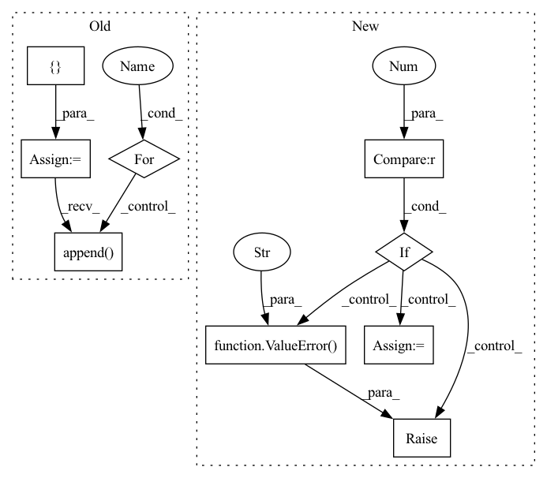

Pattern ID :32590
Before Change
def setup_eks_clusters(dlc_images):
terminable_clusters = []
frameworks = {"tensorflow": "tf", "pytorch": "pt", "mxnet": "mx"}
for long_name, short_name in frameworks.items():
if long_name in dlc_images:
cluster_name = None
if not is_pr_context():
num_nodes = 3 if long_name != "pytorch" else 4
cluster_name = f"dlc-{short_name}-cluster-" \
f"{os.getenv("CODEBUILD_RESOLVED_SOURCE_VERSION")}-{random.randint(1, 10000)}"
eks_utils.create_eks_cluster(cluster_name, "gpu", num_nodes, "p3.16xlarge", "pytest.pem")
terminable_clusters.append( cluster_name)
eks_utils.eks_setup(long_name, cluster_name)
return terminable_clusters
After Change
def setup_eks_clusters(dlc_images):
frameworks = {"tensorflow": "tf", "pytorch": "pt", "mxnet": "mx"}
frameworks_in_images = [framework for framework in frameworks.keys() if framework in dlc_images]
if len(frameworks_in_images) != 1 :
raise ValueError(
f"All images in dlc_images must be of a single framework for EKS tests.\n"
f"Instead seeing {frameworks_in_images} frameworks."
)
long_name = frameworks_in_images[0]
short_name = frameworks[long_name]
num_nodes = 2 if is_pr_context() else 3 if long_name != "pytorch" else 4
cluster_name = f"dlc-{short_name}-cluster-" \In pattern: SUPERPATTERN
Frequency: 3
Non-data size: 9
Instances Fragment ID: 94799454
Project Name: aws/deep-learning-containers
Commit Name: 1207ce7fb60430e234c1c64ecc8d7496be0ec6e2
Time: 2020-05-29
Author: 54188298+saimidu@users.noreply.github.com
File Name: test/testrunner.py
M Class Name: AnonimousClass
N Class Name: AnonimousClass
M Method Name: setup_eks_clusters(1)
N Method Name: setup_eks_clusters(1)
M Parent Class:
N Parent Class:
M File Name: test/testrunner.py
N File Name: test/testrunner.py
M Start Line: 124
M End Line: 136
N Start Line: 124
N End Line: 138
Before Change
inc_datasets = []
if not isinstance(test_fielists, list):
list_test_filelist = []
for i in range(len(train_filelists)):
list_test_filelist.append( test_fielists)
test_fielists = list_test_filelist
for tr_flist, te_flist in zip(train_filelists, test_fielists):
tr_dataset = FilelistDataset(root, tr_flist)After Change
if complete_test_set_only and not (isinstance(test_filelists, str) or
isinstance(test_filelists, Path)):
if len(test_filelists) > 1 :
raise ValueError(
"When complete_test_set_only is True, test_filelists must be a "
"str, Path or a list with a single element describing the path "
"to the complete test set." )
test_filelists = test_filelists[0]
if not complete_test_set_only:
if len(test_filelists) != len(train_filelists):
raise ValueError( Fragment ID: 94799453
Project Name: continualai/avalanche
Commit Name: e31ab896db14da2b011f9820198f667b0f51b366
Time: 2020-06-22
Author: lrzpellegrini@gmail.com
File Name: avalanche/benchmarks/scenarios/datasets_from_filelists.py
M Class Name: AnonimousClass
N Class Name: AnonimousClass
M Method Name: datasets_from_filelists(4)
N Method Name: datasets_from_filelists(3)
M Parent Class:
N Parent Class:
M File Name: avalanche/benchmarks/scenarios/datasets_from_filelists.py
N File Name: avalanche/benchmarks/scenarios/datasets_from_filelists.py
M Start Line: 125
M End Line: 139
N Start Line: 120
N End Line: 157
Before Change
meta_data.append(group.values[:, :2]) // save unique_id and ds
ts_data.append(group.values[:, 2:]) // avoid unique_id and ds
s_data = []
for idx, group in S:
s_data.append( group.iloc[:, 1:].values) // avoid unique_id
assert len(s_data[-1])==1, "Check repetitions of unique_ids"
del S, Y, X, M, GAfter Change
ts_data.append(data[start:end])
meta_data.append(meta[start:end])
if S["unique_id"].value_counts().max() > 1 :
raise ValueError("Found duplicated unique_ids in S_df" )
s_data = S.drop(columns="unique_id").values
del S, Y, X, M, G
gc.collect() Fragment ID: 94799451
Project Name: nixtla/neuralforecast
Commit Name: 239b39524453056071018ee1e3d10b1799e60c4c
Time: 2021-06-03
Author: jmorales@grupoabraxas.com
File Name: nixtla/data/tsdataset.py
M Class Name: AnonimousClass
N Class Name: AnonimousClass
M Method Name: _df_to_lists(5)
N Method Name: _df_to_lists(5)
M Parent Class:
N Parent Class:
M File Name: nixtla/data/tsdataset.py
N File Name: nixtla/data/tsdataset.py
M Start Line: 287
M End Line: 308
N Start Line: 285
N End Line: 306